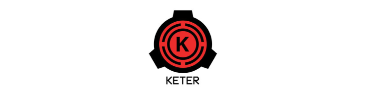
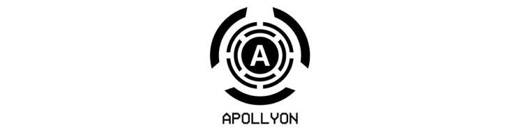
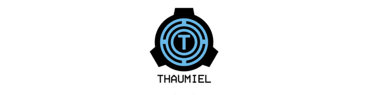

Todos os objetos, entidades e fenômenos anômalos precisam de Procedimentos Especiais de Contenção, e então recebem uma Classe de Objeto. Na Fundação, uma Classe de Objeto tem o propósito de orientar a forma de contenção, a prioridade de pesquisa, o orçamento e outras necessidades. Ela é determinada por uma série de fatores, porém, principalmente, pela dificuldade e propósito da sua contenção. Ou seja, se uma entidade for muito poderosa porém de fácil contenção ela terá uma Classe de Objeto mais baixa que uma entidade mais fraca porém mais dificil de se conter. Entre as Classes de Objeto, temos:

SCPs com classificação SAFE são anomalias que são facilmente contidas de forma segura. Normalmente isso acontece porque a fundação estudou a anomalia ao ponto que sua contenção não requer uma quantidade significativa de recursos ou porque ela precisa ser ativada “manualmente” de uma forma especifica. Classificar um SCP como SAFE, no entanto, não quer dizer que ele não represente uma ameaça, mas sim que ele é facilmente exilado.

SCPs com classificação EUCLID são anomalias que precisam de mais recursos para contenção completa ou quando a contenção não é totalmente confiável.
Normalmente a razão para isso é que a anomalia ainda não é completamente compreendida ou ela é essencialmente imprevisível. A classe EUCLID é a mais abranjente,
e, geralmente, quando uma anomalia não se encaixa nas outras Classes, ela será catalogada como EUCLID.
Observação: quaisquer SCPs autônomos, sencientes
e/ou sapientes são comumente classificados como EUCLID, devido a inerente imprevissíbilidade do objeto de agir e pensar por conta própria.

SCPs com classificação KETER são anomalias extremamente difíceis de se conter de forma duradoura ou confiável, com procedimentos de contenção extensos e complexos. A Fundação geralmente não é capaz de conter esses objetos devido a falta de entendimento a respeito da anomalia ou pela falta de tecnologia para propriamente fazê-lo. Ser classificado como KETER não indica que o SCP é perigoso, mas sim que sua contenção é muito difícil ou cara.

SCPs com classificação APOLLYON são anomalias que não podem ser contidas, a quebra de contenção é iminente ou sequer há forma mínima de controla-lá. Elas são normalmente ligadas a ameaças de destruição global ou Cenários Classe-K de algum tipo, causando, consequentemente, uma situação praticamente impossível de ser lidada pela Fundação.

SCPs com classificação THAUMIEL são anomalias que a própria Fundação utiliza para deter outros SCPs. O mero conhecimento da existência dessa Classe é restrita aos mais altos escalões da Fundação, e suas localizações, funções e status atual só são conhecidos por poucos funcionários fora do Conselho O-5.

SCPs com classificação NEUTRALIZED são anomalias que já não são mais anômalas, seja por terem sido intencionalmente ou acidentalmente desativadas ou destruidas.

SCPs com classificação EXPLAINED são anomalias que já são tão bem compreendidas que podem ser explicadas pela ciência convencional ou que foram provadas falsas ou confundidas com uma anomalia real.